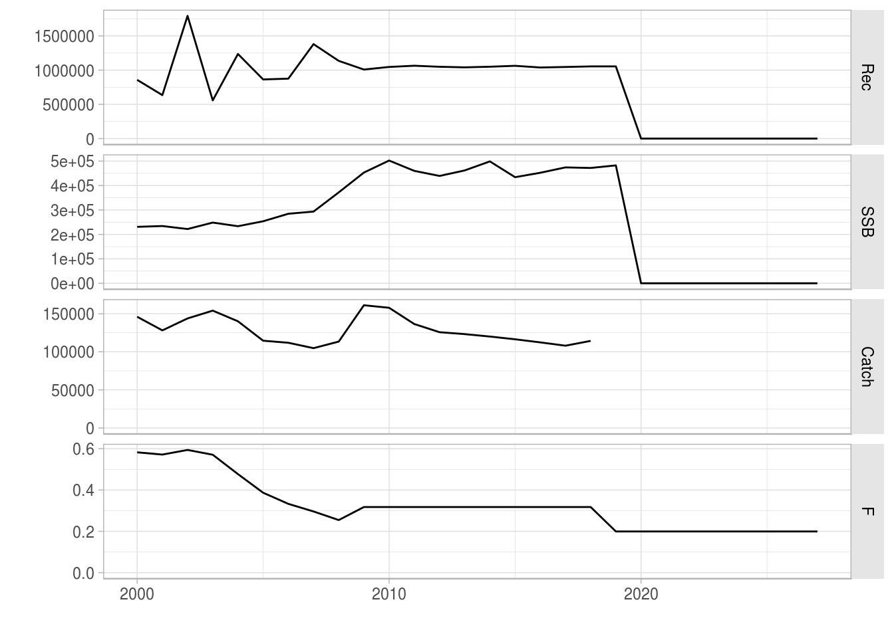
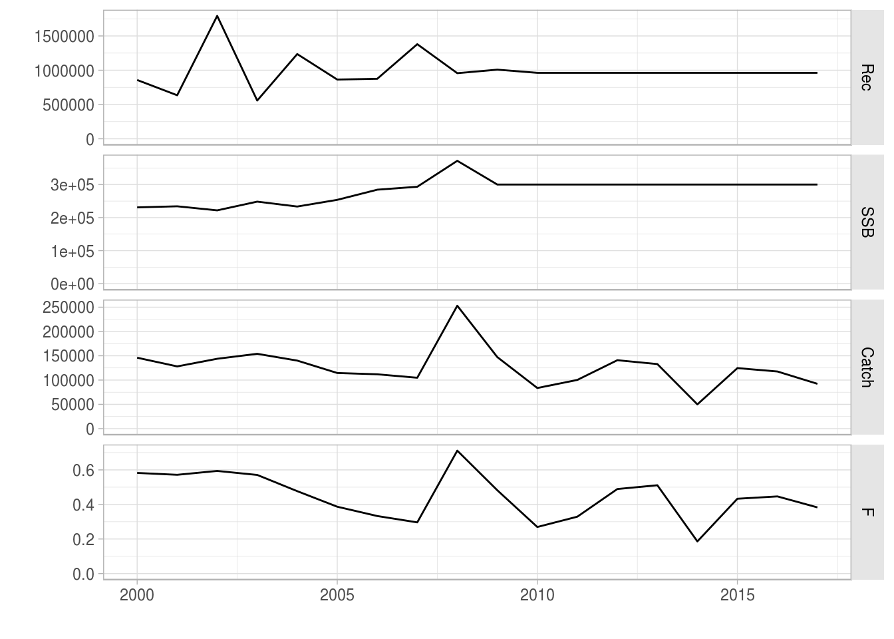
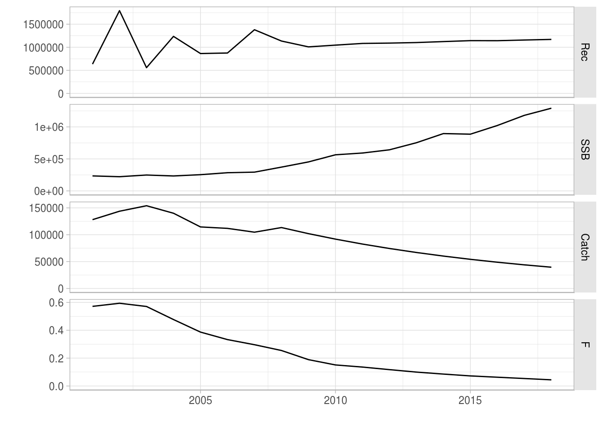
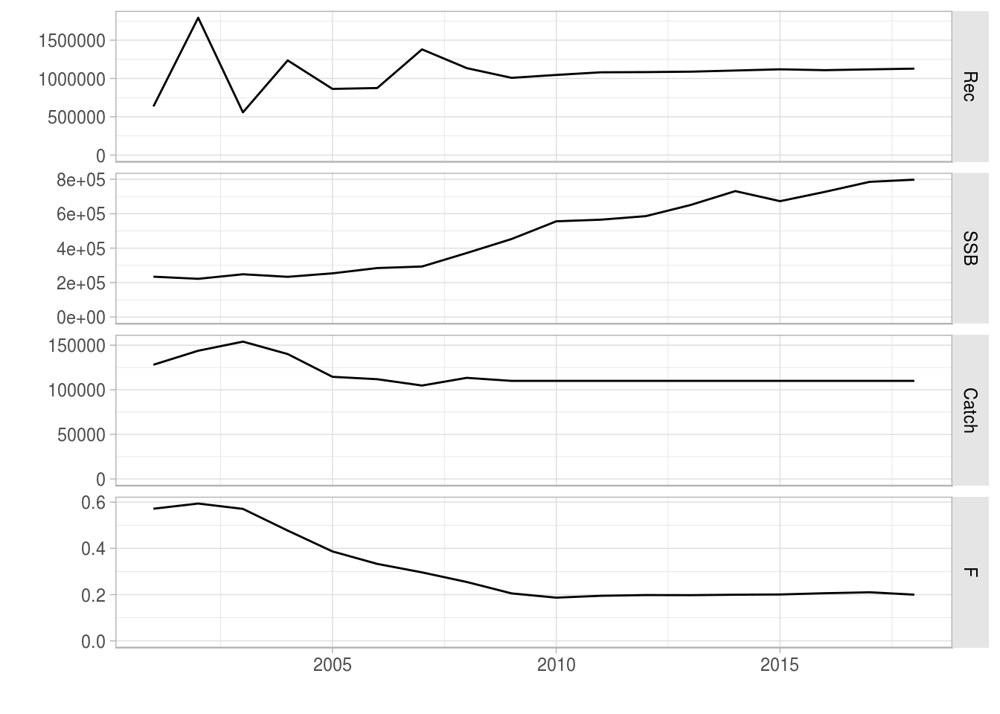
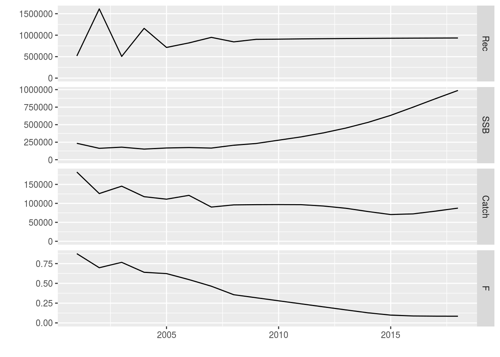
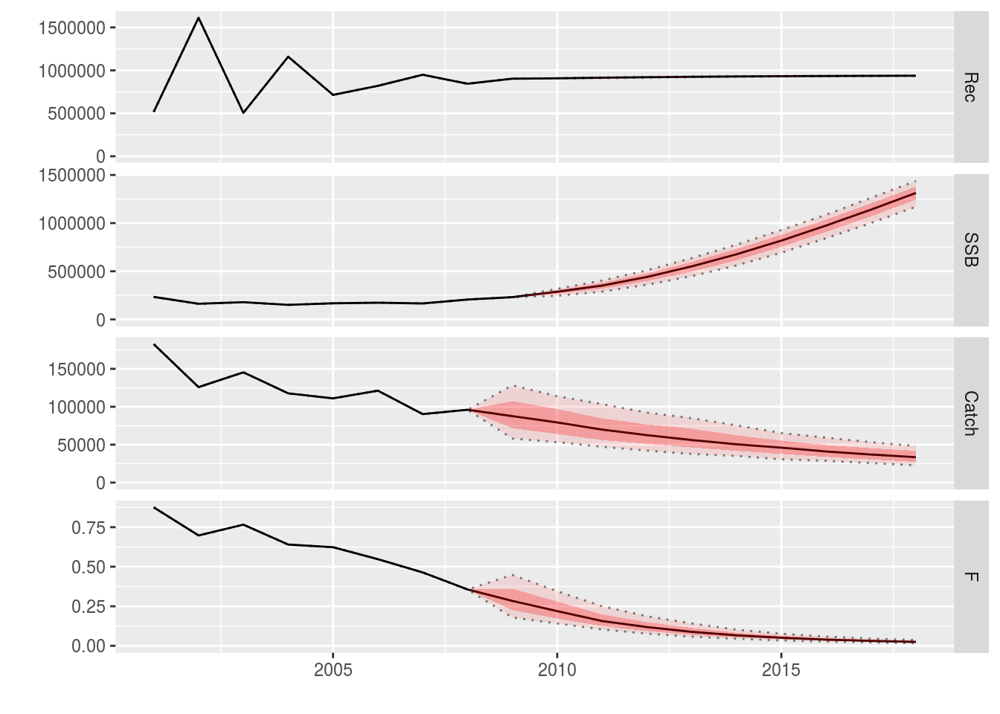

Running Medium Term Forecasts with FLash
04 September, 2018
This tutorial describes how Medium-Term Forecasts (MTF) can be performed using FLR. It uses the FLash package for running projections as well as the FLBRP package for evaluating reference points.
MTFs use the same engine as Short-Term Forecasts (STFs). However, there are some key differences between them. MTFs typically project over 5 to 10 years instead of the usual 3 years for a STF. Because of this increase in projection length it is necessary to include a stock-recruitment relationship to simulate the dynamics of the biological stock (an STF uses a constant recruitment assumption). MTFs may also have a more complicated projection control object because they can try to simulate management objectives (e.g. decreases in F over time). Finally, MTFs may also include consideration of uncertainty by including stochasticity in the projections.
Special attention must be paid to the conditioning and future assumptions of the stock.
Required packages
To follow this tutorial you should have installed the following packages:
You can do so as follows,
install.packages(c("FLCore"), repos="http://flr-project.org/R")
install.packages(c("FLash"), repos="http://flr-project.org/R")
install.packages(c("FLBRP"), repos="http://flr-project.org/R")
install.packages(c("FLAssess"), repos="http://flr-project.org/R")# This chunk loads all necessary packages, trims pkg messages
library(FLCore)
library(FLash)
library(FLBRP)
library(FLAssess)Introduction to Medium Term Forecasts
Running a MTF is similar to running a STF in that we need several components:
- An FLStock object set up for the future (assumptions);
- A stock-recruiment relationship (SRR);
- A projection control object;
However, there are some significant differences between an MTF and an STF:
- An MTF is normally run for 5 to 10 years (an STF is normally 3 years);
- An MTF can use different target types (e.g. setting catch targets, not just F targets);
- A dynamic SRR should be used (the STF assumption of mean recruitment is not a good one for more a projection of more than 3 years);
- We can include uncertainty in the recruitment and target values.
In this tutorial we will build a 10 year projection, introduce a range of target types (including minimum and maximum target values and relative target values), use a dynamic SRR and introduce uncertainty.
As ususal, we base the projections on plaice in the North Sea.
Conditioning the projection
The first step is to condition the projection by making assumptions about the stock in the future and by considering the SRR. This can be done in several different ways.
Making the future stock
As ever, load the ple4 data:
data(ple4)We again use stf() to set up a future stock (see the STF tutorial. This makes a lot of assumptions about the future stock (see the LINK TO STF tutorial for more details). There are methods of setting up the future assumptions but these are not explored here. We may want to change some of these assumptions but for the moment we will use the defaults.
# Set up a 10 year MTF
ple4_mtf <- stf(ple4, nyears = 10)Now the stock goes up to 2018:
summary(ple4_mtf)An object of class "FLStock"
Name: PLE
Description: Plaice in IV. ICES WGNSSK 2018. FLAAP
Quant: age
Dims: age year unit season area iter
10 71 1 1 1 1
Range: min max pgroup minyear maxyear minfbar maxfbar
1 10 10 1957 2027 2 6
catch : [ 1 71 1 1 1 1 ], units = t
catch.n : [ 10 71 1 1 1 1 ], units = 1000
catch.wt : [ 10 71 1 1 1 1 ], units = kg
discards : [ 1 71 1 1 1 1 ], units = t
discards.n : [ 10 71 1 1 1 1 ], units = 1000
discards.wt : [ 10 71 1 1 1 1 ], units = kg
landings : [ 1 71 1 1 1 1 ], units = t
landings.n : [ 10 71 1 1 1 1 ], units = 1000
landings.wt : [ 10 71 1 1 1 1 ], units = kg
stock : [ 1 71 1 1 1 1 ], units = t
stock.n : [ 10 71 1 1 1 1 ], units = 1000
stock.wt : [ 10 71 1 1 1 1 ], units = kg
m : [ 10 71 1 1 1 1 ], units = m
mat : [ 10 71 1 1 1 1 ], units =
harvest : [ 10 71 1 1 1 1 ], units = f
harvest.spwn : [ 10 71 1 1 1 1 ], units =
m.spwn : [ 10 71 1 1 1 1 ], units = MORE ON ASSUMPTIONS AND CONDITIONING
The stock-recruitment relationship
In these examples we use a Beverton-Holt model (see the tutorial on fitting SRRs for more detail LINK TO SRR TUTORIAL).
ple4_sr <- fmle(as.FLSR(ple4, model="bevholt"), control=list(trace=0))plot(ple4_sr)Fitted Beverton-Holt stock-recruitment relationship for the ple4 stock object
The resulting SRR fit can be seen in Figure 1.
Example 1: F targets
We saw in the STF tutorial how to set an F target (LINK). Here is some quick revision.
We will set the future F at F status quo (again) and we assume that F status quo is the mean of the last 4 years
f_status_quo <- mean(fbar(ple4)[,as.character(2005:2008)])
f_status_quo[1] 0.3177Make the control data.frame including all the years of the projection:
ctrl_target <- data.frame(year = 2009:2018,
quantity = "f",
val = f_status_quo)Make the fwdControl object from the control data.frame:
ctrl_f <- fwdControl(ctrl_target)We can take a look at the control object. We have columns of year, quantity (target type), min, val and max. min and max can be ignored for now. There is also another table underneath (with min, val and max) - again, ignore this for now.
ctrl_f
Target
year quantity min val max
1 2009 f NA 0.3177 NA
2 2010 f NA 0.3177 NA
3 2011 f NA 0.3177 NA
4 2012 f NA 0.3177 NA
5 2013 f NA 0.3177 NA
6 2014 f NA 0.3177 NA
7 2015 f NA 0.3177 NA
8 2016 f NA 0.3177 NA
9 2017 f NA 0.3177 NA
10 2018 f NA 0.3177 NA
min val max
1 NA 0.31768 NA
2 NA 0.31768 NA
3 NA 0.31768 NA
4 NA 0.31768 NA
5 NA 0.31768 NA
6 NA 0.31768 NA
7 NA 0.31768 NA
8 NA 0.31768 NA
9 NA 0.31768 NA
10 NA 0.31768 NARun fwd() with our three ingredients
ple4_f_sq <- fwd(ple4_mtf, ctrl = ctrl_f, sr = ple4_sr)What just happened? We plot the stock from the year 2000.
plot(window(ple4_f_sq, start=2000))
The future Fs are as we set in the control object (good):
fbar(ple4_f_sq)[,ac(2005:2018)], , unit = unique, season = all, area = unique
year
age 2005 2006 2007 2008 2009
all 0.38686 0.33299 0.29622 0.25465 0.31768
[ ... 4 years]
year
age 2014 2015 2016 2017 2018
all 0.31768 0.31768 0.31768 0.31768 0.31768What about recruitment? Remember we are now using a Beverton-Holt model.
rec(ple4_f_sq)[,ac(2005:2018)], , unit = unique, season = all, area = unique
year
age 2005 2006 2007 2008 2009
1 863893 875191 1379750 1135050 1008401
[ ... 4 years]
year
age 2014 2015 2016 2017 2018
1 1049618 1062957 1038442 1045891 1054303The recruitment is not constant but is not changing very much. That’s because the fitted model looks flat REF BACK TO THE SRR FIGURE.
Example 2: A decreasing catch target #{ex2}
In this example we introduce two new things:
- A new target type (catch);
- A changing target value.
Setting a catch target allows to explore the consequences of different TAC strategies. In this example, the TAC (the total catch of the stock) is reduced 10% each year for 10 years.
We create a vector of future catches based on the catch in 2008:
future_catch <- c(catch(ple4)[,"2008"]) * 0.9^(1:10)
future_catch [1] 102057 91851 82666 74400 66960 60264 54237 48814 43932 39539We create the fwdControl object, setting the quantity to catch and passing in the vector of future catches:
ctrl_catch <- fwdControl(
data.frame(
year=2009:2018,
quantity = "catch",
val=future_catch))The control object has the desired catch target values.
ctrl_catch
Target
year quantity min val max
1 2009 catch NA 102057 NA
2 2010 catch NA 91851 NA
3 2011 catch NA 82666 NA
4 2012 catch NA 74400 NA
5 2013 catch NA 66960 NA
6 2014 catch NA 60264 NA
7 2015 catch NA 54237 NA
8 2016 catch NA 48814 NA
9 2017 catch NA 43932 NA
10 2018 catch NA 39539 NA
min val max
1 NA 102057 NA
2 NA 91851 NA
3 NA 82666 NA
4 NA 74400 NA
5 NA 66960 NA
6 NA 60264 NA
7 NA 54237 NA
8 NA 48814 NA
9 NA 43932 NA
10 NA 39539 NAWe call fwd() with the stock, the control object and the SRR:
ple4_catch <- fwd(ple4_mtf, ctrl_catch, sr = ple4_sr)And take a look at the results:
plot(window(ple4_catch, start=2000))
The decreasing catch targets have been hit. Note that F has to be similarly reduced to hit the catch targets, resulting in a surge in SSB.
Example 3: Setting an SSB target
In the previous examples we have set target types based on the activity of the fleet (F and catch). We can also set biological target types. This is useful when there are biological reference points, e.g. Bpa. Here we set SSB as the target.
Care with timing
When setting a biological abundance target we have to consider the timing of the target. In an FLStock, abundances are at the beginning of the year (or at the very end of the previous year). For example, if you look at the total stock abundances you get the stock at the beginning of each year, i.e. before any fishing has occurred.
Internally, FLash attempts to hit the desired target by finding the appropriate value of F. However, the stock abundance at the start of the year is the result of fishing in the previous year, i.e SSB in year Y depends on F in Y-1. This means that if you set an abundance based target, you are really finding the F in the previous year that will give you that target. Setting an SSB target in a year is the equivalent of setting an SSB target for the very end of that year (the same as setting a target for the very start of the next year). The result is that you have to be careful with the years in the control object when setting a target based on the stock abundance.
This is best illustrated with a simple example of a one year projection. If we want to hit an SSB target in 2009 (i.e. the SSB at the start of 2009 etc), we actually set it in the control object as being for 2008 as it is in 2008 that the F will be found that hits the SSB in 2009. In this example we want the future SSB to be high (we could have used FLBRP to come up with a suitable value, e.g. Bmsy but here we just pick a value).
future_ssb <- 150000
ctrl_ssb <- fwdControl(data.frame(year=2008, quantity = "ssb", val=future_ssb))
ctrl_ssb
Target
year quantity min val max
1 2008 ssb NA 150000 NA
min val max
1 NA 150000 NAple4_ssb <- fwd(ple4_mtf, ctrl_ssb, sr = ple4_sr)Remember, we have effectively set an SSB target for the very end of 2008 but we do not see this in the FLStock until the very beginning of 2009. The result is that we can see that the SSB target has been hit, but not until 2009.
ssb(ple4_ssb)[,ac(2005:2009)]An object of class "FLQuant"
, , unit = unique, season = all, area = unique
year
age 2005 2006 2007 2008 2009
all 253737 284447 293330 371837 150000
units: NA A longer projection
Here we run a longer projection with a constant SSB target. The future stock object, ple4_mtf, only goes up to 2018. This means that in the control object we can only set an SSB target up to 2017. Setting an SSB target for 2018 would try to hit the SSB at the start of 2019 which is outside of our stock object, resulting in an error (try it, if you want).
future_ssb <- 300000
ctrl_ssb <- fwdControl(data.frame(year=2008:2017, quantity = "ssb", val=future_ssb))
ple4_ssb <- fwd(ple4_mtf, ctrl_ssb, sr = ple4_sr)The SSB has been hit upto 2018.
ssb(ple4_ssb)[,ac(2005:2018)], , unit = unique, season = all, area = unique
year
age 2005 2006 2007 2008 2009
all 253737 284447 293330 371837 300000
[ ... 4 years]
year
age 2014 2015 2016 2017 2018
all 3e+05 3e+05 3e+05 3e+05 3e+05Note: we have to ignore the F and removals (catch, landings and discards) in 2018 as these have not been included in the projection and still hold their initial values.
plot(window(ple4_ssb, start=2000, end=2017))
Example 4: Relative catch target
The examples above have dealt with ABSOLUTE target values. We now introduce the idea of RELATIVE values. This allows us to set the target value RELATIVE to the value in another year.
We do this by using the rel.year column in the control object (the year that the target is relative to). The val column now holds the relative value, not the absolute value.
Here we set catches in the projection years to be 90% of the catches in the previous year, i.e. we want the catche in 2009 to be 0.9 * value in 2008 etc.
ctrl_rel_catch <- fwdControl(
data.frame(year = 2009:2018,
quantity = "catch",
val = 0.9,
rel.year = 2008:2017))When we look at the control object we can see that an extra column, rel.year, appears:
ctrl_rel_catch
Target
year quantity min val max rel.year
1 2009 catch NA 0.9 NA 2008
2 2010 catch NA 0.9 NA 2009
3 2011 catch NA 0.9 NA 2010
4 2012 catch NA 0.9 NA 2011
5 2013 catch NA 0.9 NA 2012
6 2014 catch NA 0.9 NA 2013
7 2015 catch NA 0.9 NA 2014
8 2016 catch NA 0.9 NA 2015
9 2017 catch NA 0.9 NA 2016
10 2018 catch NA 0.9 NA 2017
min val max
1 NA 0.9 NA
2 NA 0.9 NA
3 NA 0.9 NA
4 NA 0.9 NA
5 NA 0.9 NA
6 NA 0.9 NA
7 NA 0.9 NA
8 NA 0.9 NA
9 NA 0.9 NA
10 NA 0.9 NAWe run the projection as normal:
ple4_rel_catch <- fwd(ple4_mtf, ctrl_rel_catch, sr = ple4_sr)catch(ple4_rel_catch), , unit = unique, season = all, area = unique
year
age 1957 1958 1959 1960 1961
all 78360 88785 105186 117975 119541
[ ... 61 years]
year
age 2023 2024 2025 2026 2027
all NA NA NA NA NA catch(ple4_rel_catch)[,ac(2009:2018)] / catch(ple4_rel_catch)[,ac(2008:2017)]An object of class "FLQuant"
, , unit = unique, season = all, area = unique
year
age 2009 2010 2011 2012 2013 2014 2015 2016 2017 2018
all 0.9 0.9 0.9 0.9 0.9 0.9 0.9 0.9 0.9 0.9
units: NA plot(window(ple4_rel_catch, start = 2001, end = 2018))
This is equivalent to the catch example above (LINK TO EXAMPLE 2) but without using absolute values.
Example 5: Minimum and Maximum targets
In this Example we introduce two new things:
- Multiple targets;
- Targets with bounds.
Here we set an F target so that the future F = F0.1. However, we also don’t want the catch to fall below a minimum level. We do this by setting a minimum value for the catch.
First we calculate F0.1 using FLBRP (see the FLBRP tutorial LINK TO FLBRP TUTORIAL):
f01 <- c(refpts(brp(FLBRP(ple4)))["f0.1","harvest"])
f01[1] 0.1553We’ll set our minimum catch to be the mean catch of the last 3 years.
min_catch <- mean(catch(ple4_mtf)[,as.character(2006:2008)])
min_catch[1] 110010To make the control object we can bind together two data.frames, 1 for each target type. Note that we include a min = NA as a column of the F data.frame. This is necessary to bind it to the catch data.frame
ctrl_target <- rbind(
f_df <- data.frame(
year = 2009:2018,
quantity = "f",
val = f01,
min = NA),
catch_df <- data.frame(
year = 2009:2018,
quantity = "catch",
val = NA,
min = min_catch)
)This looks sort of right but we need to order the data.frame so that the years are sequential and within each year, minimum / maximum targets come after the absolute one.
ctrl_target <- ctrl_target[order(ctrl_target$year),]
ctrl_target| year | quantity | val | min | |
|---|---|---|---|---|
| 1 | 2009 | f | 0.1553 | NA |
| 11 | 2009 | catch | NA | 110010 |
| 2 | 2010 | f | 0.1553 | NA |
| 12 | 2010 | catch | NA | 110010 |
| 3 | 2011 | f | 0.1553 | NA |
| 13 | 2011 | catch | NA | 110010 |
| 4 | 2012 | f | 0.1553 | NA |
| 14 | 2012 | catch | NA | 110010 |
| 5 | 2013 | f | 0.1553 | NA |
| 15 | 2013 | catch | NA | 110010 |
| 6 | 2014 | f | 0.1553 | NA |
| 16 | 2014 | catch | NA | 110010 |
| 7 | 2015 | f | 0.1553 | NA |
| 17 | 2015 | catch | NA | 110010 |
| 8 | 2016 | f | 0.1553 | NA |
| 18 | 2016 | catch | NA | 110010 |
| 9 | 2017 | f | 0.1553 | NA |
| 19 | 2017 | catch | NA | 110010 |
| 10 | 2018 | f | 0.1553 | NA |
| 20 | 2018 | catch | NA | 110010 |
| Make | the con | trol object | : |
ctrl_min_catch <- fwdControl(ctrl_target)What did we create (again, ignore the second table for the moment)? We can see that the min column has now got some data. The max column is still empty.
ctrl_min_catch
Target
year quantity min val max
1 2009 f NA 0.1553 NA
2 2009 catch 110010 NA NA
3 2010 f NA 0.1553 NA
4 2010 catch 110010 NA NA
5 2011 f NA 0.1553 NA
6 2011 catch 110010 NA NA
7 2012 f NA 0.1553 NA
8 2012 catch 110010 NA NA
9 2013 f NA 0.1553 NA
10 2013 catch 110010 NA NA
11 2014 f NA 0.1553 NA
12 2014 catch 110010 NA NA
13 2015 f NA 0.1553 NA
14 2015 catch 110010 NA NA
15 2016 f NA 0.1553 NA
16 2016 catch 110010 NA NA
17 2017 f NA 0.1553 NA
18 2017 catch 110010 NA NA
19 2018 f NA 0.1553 NA
20 2018 catch 110010 NA NA
min val max
1 NA 1.5532e-01 NA
2 1.1001e+05 NA NA
3 NA 1.5532e-01 NA
4 1.1001e+05 NA NA
5 NA 1.5532e-01 NA
6 1.1001e+05 NA NA
7 NA 1.5532e-01 NA
8 1.1001e+05 NA NA
9 NA 1.5532e-01 NA
10 1.1001e+05 NA NA
11 NA 1.5532e-01 NA
12 1.1001e+05 NA NA
13 NA 1.5532e-01 NA
14 1.1001e+05 NA NA
15 NA 1.5532e-01 NA
16 1.1001e+05 NA NA
17 NA 1.5532e-01 NA
18 1.1001e+05 NA NA
19 NA 1.5532e-01 NA
20 1.1001e+05 NA NAAnd project:
ple4_min_catch <- fwd(ple4_mtf, ctrl_min_catch, sr = ple4_sr)What happens? The catch constraint is hit in every year of the projection. The projected F decreases but never hits the target F because the minimum catch constraint prevents it from dropping further.
plot(window(ple4_min_catch, start = 2001, end = 2018))
It is possible to also set a maximum constraint, for example, to prevent F from being too large.
Example 6 - Relative targets and bounds
In this example we use a combination of relative targets and bounds.
This kind of approach can be used to model a recovery plan. For example, we want to decrease F to F0.1 by 2015 (absolute target value) but catches cannot change by more than 15% each year (relative bound). This requires careful setting up of the control object. Again, we’ll bind two data.frames.
We make a vector of the desired F targets using F0.1 we calculated above. We set up an F sequence that decreases from the current Fbar in 2008 to F01 in 2015, then F01 until 2018.
current_fbar <- c(fbar(ple4)[,"2008"])
f_target <- c(seq(from = current_fbar, to = f01, length = 8)[-1], rep(f01, 3))
f_target [1] 0.2405 0.2263 0.2121 0.1979 0.1837 0.1695 0.1553 0.1553 0.1553 0.1553We set maximum annual change in catch to be 10% (in either direction).
rel_catch_bound <- 0.10We make the control data.frame by joining a data.frame for the F target and one for the catch target. Note the use of the rel.year, min and max columns in the catch data.frame.
ctrl_target <- rbind(
f_df <- data.frame(
year = 2009:2018,
rel.year = NA,
quantity = "f",
val = f_target,
max = NA,
min = NA),
catch_df <- data.frame(
year = 2009:2018,
rel.year = 2008:2017,
quantity = "catch",
val = NA,
max = 1 + rel_catch_bound,
min = 1 - rel_catch_bound)
)We have to reorder the data.frame to be in chronological order and for the absolute values to be before the minimum / maximum targets.
ctrl_target <- ctrl_target[order(ctrl_target$year),]
ctrl_target| year | rel.year | quantity | val | max | min | |
|---|---|---|---|---|---|---|
| 1 | 2009 | NA | f | 0.2405 | NA | NA |
| 11 | 2009 | 2008 | catch | NA | 1.1 | 0.9 |
| 2 | 2010 | NA | f | 0.2263 | NA | NA |
| 12 | 2010 | 2009 | catch | NA | 1.1 | 0.9 |
| 3 | 2011 | NA | f | 0.2121 | NA | NA |
| 13 | 2011 | 2010 | catch | NA | 1.1 | 0.9 |
| 4 | 2012 | NA | f | 0.1979 | NA | NA |
| 14 | 2012 | 2011 | catch | NA | 1.1 | 0.9 |
| 5 | 2013 | NA | f | 0.1837 | NA | NA |
| 15 | 2013 | 2012 | catch | NA | 1.1 | 0.9 |
| 6 | 2014 | NA | f | 0.1695 | NA | NA |
| 16 | 2014 | 2013 | catch | NA | 1.1 | 0.9 |
| 7 | 2015 | NA | f | 0.1553 | NA | NA |
| 17 | 2015 | 2014 | catch | NA | 1.1 | 0.9 |
| 8 | 2016 | NA | f | 0.1553 | NA | NA |
| 18 | 2016 | 2015 | catch | NA | 1.1 | 0.9 |
| 9 | 2017 | NA | f | 0.1553 | NA | NA |
| 19 | 2017 | 2016 | catch | NA | 1.1 | 0.9 |
| 10 | 2018 | NA | f | 0.1553 | NA | NA |
| 20 | 2018 | 2017 | catch | NA | 1.1 | 0.9 |
Make the control object. The min and max columns now both have data:
ctrl_rel_min_max_catch <- fwdControl(ctrl_target)
ctrl_rel_min_max_catch
Target
year quantity min val max rel.year
1 2009 f NA 0.2405 NA NA
2 2009 catch 0.9 NA 1.1 2008
3 2010 f NA 0.2263 NA NA
4 2010 catch 0.9 NA 1.1 2009
5 2011 f NA 0.2121 NA NA
6 2011 catch 0.9 NA 1.1 2010
7 2012 f NA 0.1979 NA NA
8 2012 catch 0.9 NA 1.1 2011
9 2013 f NA 0.1837 NA NA
10 2013 catch 0.9 NA 1.1 2012
11 2014 f NA 0.1695 NA NA
12 2014 catch 0.9 NA 1.1 2013
13 2015 f NA 0.1553 NA NA
14 2015 catch 0.9 NA 1.1 2014
15 2016 f NA 0.1553 NA NA
16 2016 catch 0.9 NA 1.1 2015
17 2017 f NA 0.1553 NA NA
18 2017 catch 0.9 NA 1.1 2016
19 2018 f NA 0.1553 NA NA
20 2018 catch 0.9 NA 1.1 2017
min val max
1 NA 0.24046 NA
2 0.90000 NA 1.10000
3 NA 0.22627 NA
4 0.90000 NA 1.10000
5 NA 0.21208 NA
6 0.90000 NA 1.10000
7 NA 0.19789 NA
8 0.90000 NA 1.10000
9 NA 0.18370 NA
10 0.90000 NA 1.10000
11 NA 0.16951 NA
12 0.90000 NA 1.10000
13 NA 0.15532 NA
14 0.90000 NA 1.10000
15 NA 0.15532 NA
16 0.90000 NA 1.10000
17 NA 0.15532 NA
18 0.90000 NA 1.10000
19 NA 0.15532 NA
20 0.90000 NA 1.10000Run the projection:
recovery<-fwd(ple4_mtf, ctrl=ctrl_rel_min_max_catch, sr=ple4_sr)What happened? The F decreased and then remains constant, while the catch has changed by only a limited amount each year.
plot(window(recovery, start = 2001, end = 2018))
The bounds on the catch are operational in several of the years. They prevent the catch from increasing as well as decreasing too strongly, (allegedly) providing stability to the fishery.
catch(recovery)[,ac(2009:2018)] / catch(recovery)[,ac(2008:2017)]An object of class "FLQuant"
, , unit = unique, season = all, area = unique
year
age 2009 2010 2011 2012 2013 2014 2015 2016
all 1.10000 1.01636 0.90000 0.90000 0.94825 0.94690 0.95171 1.01636
year
age 2017 2018
all 1.01975 1.07024
units: NA Projections with stochasticity
So far we have looked at combinations of:
- absolute target values;
- relative target values;
- bounds on targets, and
- mixed target types.
But all of the projections have been deterministic, that is they all have only one iteration. Now, we are going start looking at projecting with multiple iterations. This is important because it can help us understand the impact of uncertainty (e.g. in the stock-recruitment relationship).
fwd() is happy to work over iterations. It treats each iteration separately. “All” you need to do is set the arguments correctly.
There are two main ways of introducing iterations into fwd():
- By passing in residuals to the stock-recruitment function (as another argument to fwd());
- Through the control object (by setting target values as multiple values)
You can actually use both of these methods at the same time. As you can probably imagine, this can quickly become very complicated so we’ll just do some simple examples to start with.
Preparation for projecting with iterations
To perform a stochastic projection you need a stock object with multiple iterations. If you are using the output of a stock assessment method, such as a4a, then you may have one already. Here we use the propagate() method to expand the ple4 stock object to have 1000 iterations. We’ll use the ten year projection as before (remember that we probably should change the assumptions that come with the stf() method).
niters <- 1000
ple4_mtf <- stf(ple4, nyears = 10)
ple4_mtf <- propagate(ple4_mtf, niters)You can see that the 6th dimension, iterations, now has length 1000:
summary(ple4_mtf)An object of class "FLStock"
Name: PLE
Description: Plaice in IV. ICES WGNSSK 2018. FLAAP
Quant: age
Dims: age year unit season area iter
10 71 1 1 1 1000
Range: min max pgroup minyear maxyear minfbar maxfbar
1 10 10 1957 2027 2 6
catch : [ 1 71 1 1 1 1000 ], units = t
catch.n : [ 10 71 1 1 1 1000 ], units = 1000
catch.wt : [ 10 71 1 1 1 1000 ], units = kg
discards : [ 1 71 1 1 1 1000 ], units = t
discards.n : [ 10 71 1 1 1 1000 ], units = 1000
discards.wt : [ 10 71 1 1 1 1000 ], units = kg
landings : [ 1 71 1 1 1 1000 ], units = t
landings.n : [ 10 71 1 1 1 1000 ], units = 1000
landings.wt : [ 10 71 1 1 1 1000 ], units = kg
stock : [ 1 71 1 1 1 1000 ], units = t
stock.n : [ 10 71 1 1 1 1000 ], units = 1000
stock.wt : [ 10 71 1 1 1 1000 ], units = kg
m : [ 10 71 1 1 1 1000 ], units = m
mat : [ 10 71 1 1 1 1000 ], units =
harvest : [ 10 71 1 1 1 1000 ], units = f
harvest.spwn : [ 10 71 1 1 1 1000 ], units =
m.spwn : [ 10 71 1 1 1 1000 ], units = Example 7: Stochastic recruitment
There are two arguments to fwd() that we haven’t used yet:
- sr.residuals
- sr.residuals.mult
These are used for specifying the recruitment residuals (sr.residuals) and whether these residuals are multiplicative (sr.residuals.mult=TRUE) or additive (FALSE). In this example we’ll use multiplicative residuals i.e. the recruitment values in projection = deterministic recruitment predicted by the SRR model * residuals. The residuals are passed in as an FLQuant with years and iterations. Here we make an empty FLQuant that will be filled with residuals.
multi_rec_residuals <- FLQuant(NA, dimnames = list(year=2009:2018, iter=1:niters))We’re going to use residuals from the stock-recruitment relationship we fitted at the beginning. We can access these using:
residuals(ple4_sr), , unit = unique, season = all, area = unique
year
age 1958 1959 1960 1961 1962
1 -0.33249 -0.13292 -0.22899 -0.15108 -0.50351
[ ... 50 years]
year
age 2013 2014 2015 2016 2017
1 0.282986 0.385725 -0.235863 0.072568 0.473244These residuals are on a log scale i.e. log_residuals = log(observed_recruitment) - log(predicted_recruitment). To use these log residuals multiplicatively we need to transform them with exp():
We want to fill up our multi_rec_residuals FLQuant by randomly sampling from these log residuals. We can do this with the sample() function. We want to sample with replacement (i.e. if a residual is chosen, it gets put back in the pool and can be chosen again).
First we get generate the samples of the years (indices of the residuals we will pick).
sample_years <- sample(dimnames(residuals(ple4_sr))$year, niters * 10, replace = TRUE)We fill up the FLQuant we made earlier with the residuals using the sampled years:
multi_rec_residuals[] <- exp(residuals(ple4_sr)[,sample_years])What have we got?
multi_rec_residualsAn object of class "FLQuant"
iters: 1000
, , unit = unique, season = all, area = unique
year
quant 2009 2010 2011 2012
all 0.96993(0.506) 0.96993(0.495) 0.96993(0.488) 0.96099(0.387)
year
quant 2013 2014 2015 2016
all 0.96993(0.495) 1.00595(0.476) 1.00595(0.514) 0.96993(0.477)
year
quant 2017 2018
all 1.00595(0.520) 1.02471(0.471)
units: NA It’s an FLQuant of SRR residuals but what do those brackets mean? The information in the brackets is the Median Absolute Deviation, a way of summarising the iterations. We have 1000 iterations but don’t want to see all of them - just a summary.
We now have the recruitment residuals. We’ll use the ctrl_catch control object we made in Example 2.
with decreasing catch. We call fwd() as usual, only now we have sr.residuals and sr.residuals.mult arguments. This takes a little time (we have 1000 iterations).
ple4_stoch_rec <- fwd(ple4_mtf, ctrl = ctrl_catch, sr = ple4_sr, sr.residuals = multi_rec_residuals, sr.residuals.mult = TRUE)What just happened? We can see that now we have uncertainty in the recruitment estimates, driven by the residuals. This uncertainty feeds into the SSB and, to a lesser extent, the projected F and catch.
plot(window(ple4_stoch_rec, start = 2001, end = 2018))
We can see that the projected stock metrics also have uncertainty in them.
rec(ple4_stoch_rec)[,ac(2008:2018)]iters: 1000
, , unit = unique, season = all, area = unique
year
age 2008 2009 2010 2011
1 1135050( 0) 978080(510283) 1014777(517962) 1054374(528951)
year
age 2012
1 1055789(442099)
[ ... 1 years]
year
age 2014 2015 2016 2017
1 1135050( 0) 978080(510283) 1014777(517962) 1054374(528951)
year
age 2018
1 1055789(442099)fbar(ple4_stoch_rec)[,ac(2008:2018)]iters: 1000
, , unit = unique, season = all, area = unique
year
age 2008 2009 2010 2011
all 0.25465(0.00000) 0.18956(0.00881) 0.15037(0.01495) 0.13373(0.02223)
year
age 2012
all 0.11330(0.02465)
[ ... 1 years]
year
age 2014 2015 2016 2017
all 0.25465(0.00000) 0.18956(0.00881) 0.15037(0.01495) 0.13373(0.02223)
year
age 2018
all 0.11330(0.02465)ssb(ple4_stoch_rec)[,ac(2008:2018)]iters: 1000
, , unit = unique, season = all, area = unique
year
age 2008 2009 2010 2011
all 371837( 0) 453027( 0) 562681(27467) 594845(46385)
year
age 2012
all 652657(80208)
[ ... 1 years]
year
age 2014 2015 2016 2017
all 371837( 0) 453027( 0) 562681(27467) 594845(46385)
year
age 2018
all 652657(80208)Example 8: stochastic target values
In this example we introduce uncertainty by including uncertainty in our target values. This example has catch as the target, except now catch will be stochastic.
We will use the ctrl_catch object from above (we make a copy):
ctrl_catch
Target
year quantity min val max
1 2009 catch NA 102057 NA
2 2010 catch NA 91851 NA
3 2011 catch NA 82666 NA
4 2012 catch NA 74400 NA
5 2013 catch NA 66960 NA
6 2014 catch NA 60264 NA
7 2015 catch NA 54237 NA
8 2016 catch NA 48814 NA
9 2017 catch NA 43932 NA
10 2018 catch NA 39539 NA
min val max
1 NA 102057 NA
2 NA 91851 NA
3 NA 82666 NA
4 NA 74400 NA
5 NA 66960 NA
6 NA 60264 NA
7 NA 54237 NA
8 NA 48814 NA
9 NA 43932 NA
10 NA 39539 NActrl_catch_iters <- ctrl_catchLet’s take a look at what else is in the control object:
slotNames(ctrl_catch_iters)[1] "target" "effort" "trgtArray" "effArray" "block" The iterations of the target value are set in the trgtArray slot. This is the second table that gets printed when you call the control object.
ctrl_catch_iters@trgtArray, , iter = 1
min val max
1 NA 102057 NA
2 NA 91851 NA
3 NA 82666 NA
4 NA 74400 NA
5 NA 66960 NA
6 NA 60264 NA
7 NA 54237 NA
8 NA 48814 NA
9 NA 43932 NA
10 NA 39539 NAWhat is this slot?
class(ctrl_catch_iters@trgtArray)[1] "array"dim(ctrl_catch_iters@trgtArray)[1] 10 3 1It’s a 3D array with structure: target no x value x iteration. It’s in here that we set the stochastic projection values. Each row of the trgtArray slot corresponds to a row in the control data.frame we passed in.
Here we set 10 targets (one for each year in the projection), so the first dimension of trgtArray has length 10. The second dimension always has length 3 (for min, val and max columns). The third dimension is where the iterations are stored. This is currently length 1. We have 1000 iterations and therefore we need to expand trgtArray along the iter dimension so it can store the 1000 iterations.
Unfortunately, there is not a nice way of doing this. The simplest way is just to make a new array with the right dimensions. Note that we need to put in dimnames.
new_trgtArray <- array(NA, dim=c(10,3,niters), dimnames = list(1:10, c("min","val","max"),iter=1:niters))
dim(new_trgtArray)[1] 10 3 1000Now we can fill it up with new data (our stochastic catch targets).
We need to generate random catch target data. This could come from a number of sources (e.g. MSY estimated with uncertainty). In this example we make it very simple, by using lognormal distribution with a fixed standard deviation of 0.3. We multiply the deterministic catch target values by samples from this distribution.
future_catch_iters <- ctrl_catch_iters@trgtArray[,"val",] * rlnorm(10 * niters, meanlog = 0, sdlog=0.3)We fill up trgtArray with these values. We just fill up the val column (you can also set the min and max columns to set stochastic bounds).
new_trgtArray[,"val",] <- future_catch_itersWe put our new trgtArray into the control object:
ctrl_catch_iters@trgtArray <- new_trgtArrayWe can see that now we have stochasticity in the target values.
ctrl_catch_iters
Target
year quantity min val max
1 2009 catch NA 102057 NA
2 2010 catch NA 91851 NA
3 2011 catch NA 82666 NA
4 2012 catch NA 74400 NA
5 2013 catch NA 66960 NA
6 2014 catch NA 60264 NA
7 2015 catch NA 54237 NA
8 2016 catch NA 48814 NA
9 2017 catch NA 43932 NA
10 2018 catch NA 39539 NA
min val max
1 NA( NA) 103502(31044) NA( NA)
2 NA( NA) 93672(28603) NA( NA)
3 NA( NA) 82509(24980) NA( NA)
4 NA( NA) 73873(22275) NA( NA)
5 NA( NA) 66293(20989) NA( NA)
6 NA( NA) 59659(16935) NA( NA)
7 NA( NA) 54421(15150) NA( NA)
8 NA( NA) 48435(13472) NA( NA)
9 NA( NA) 43739(12763) NA( NA)
10 NA( NA) 39546(12281) NA( NA)
iter: 1000 We project as normal using the deterministic SRR.
ple4_catch_iters <- fwd(ple4_mtf, ctrl_catch_iters, sr = ple4_sr)What happened?
plot(window(ple4_catch_iters, start = 2001, end = 2018))
The projected catches reflect the uncertainty in the target.
catch(ple4_catch_iters)[,ac(2008:2018)]iters: 1000
, , unit = unique, season = all, area = unique
year
age 2008 2009 2010 2011
all 113397( 0) 103502(31044) 93672(28603) 82509(24980)
year
age 2012
all 73873(22275)
[ ... 1 years]
year
age 2014 2015 2016 2017
all 113397( 0) 103502(31044) 93672(28603) 82509(24980)
year
age 2018
all 73873(22275)Example 9: A projection with stochastic catch and recruiment
What is going on with recruitment in the results of the previous example?
rec(ple4_catch_iters)[,ac(2008:2018)]iters: 1000
, , unit = unique, season = all, area = unique
year
age 2008 2009 2010 2011
1 1135050( 0) 1008401( 0) 1046235( 0) 1082512( 8935)
year
age 2012
1 1087981(12436)
[ ... 1 years]
year
age 2014 2015 2016 2017
1 1135050( 0) 1008401( 0) 1046235( 0) 1082512( 8935)
year
age 2018
1 1087981(12436)Remember that here recruitment is not being driven by random residuals, it is only be driven by SSB. The recruitment in year Y is a result of the SSB in year Y-1. The SSB in year Y-1 is a result of the catch in year Y-2. So if catch is stochastic in 2009, we don’t see the impact of the stochasticity on the recruitment until 2011. Even then the impact is small. This seems unlikely so we can also put in recruitment residuals (we already made them for Example 7).
ple4_catch_iters <- fwd(ple4_mtf, ctrl_catch_iters, sr = ple4_sr, sr.residuals = multi_rec_residuals, sr.residuals.mult = TRUE)What happened?
plot(window(ple4_catch_iters, start = 2001, end = 2018))
The projected recruitment and catches are stochastic.
catch(ple4_catch_iters)[,ac(2008:2018)]iters: 1000
, , unit = unique, season = all, area = unique
year
age 2008 2009 2010 2011
all 113397( 0) 103502(31044) 93672(28603) 82509(24980)
year
age 2012
all 73873(22275)
[ ... 1 years]
year
age 2014 2015 2016 2017
all 113397( 0) 103502(31044) 93672(28603) 82509(24980)
year
age 2018
all 73873(22275)rec(ple4_catch_iters)[,ac(2008:2018)]iters: 1000
, , unit = unique, season = all, area = unique
year
age 2008 2009 2010 2011
1 1135050( 0) 978080(510283) 1014777(517962) 1053238(525454)
year
age 2012
1 1056372(462179)
[ ... 1 years]
year
age 2014 2015 2016 2017
1 1135050( 0) 978080(510283) 1014777(517962) 1053238(525454)
year
age 2018
1 1056372(462179)TO DO
Alternative syntax for controlling the projection
SOMETHING ON CALLING FWD() AND SPECIFYING TARGETS AS ARGUMENTS
Notes on conditioning projections
SOMETHING ON FWD WINDOW
References
More information
- You can submit bug reports, questions or suggestions on this tutorial at https://github.com/flr/doc/issues.
- Or send a pull request to https://github.com/flr/doc/
- For more information on the FLR Project for Quantitative Fisheries Science in R, visit the FLR webpage, http://flr-project.org.
Software Versions
- R version 3.5.1 (2018-07-02)
- FLCore: 2.6.9.9002
- FLash: 2.5.9
- FLBRP: 2.5.3
- FLAssess: 2.6.2
- Compiled: Tue Sep 4 11:46:36 2018
License
This document is licensed under the Creative Commons Attribution-ShareAlike 4.0 International license.